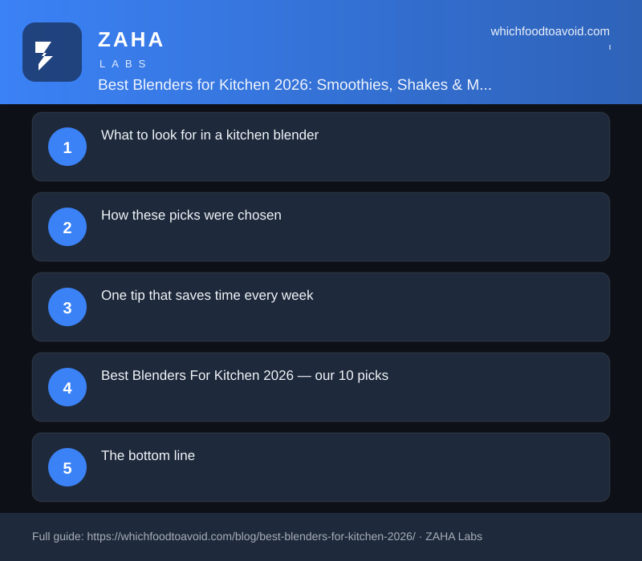

Best Blenders for Kitchen 2026: Smoothies, Shakes & More

A $37 personal blender regularly outperforms machines triple its price in side-by-side smoothie tests—wattage matters far more than brand name or sticker price.
Short answer: The best blenders for kitchen use in 2026 do not have to cost a fortune. The KOIOS 900W personal blender handles smoothies, protein shakes, and ice at under $40, and pairing it with a reliable kitchen scale makes every recipe repeatable. Whether you blend daily or just occasionally, the right setup is simpler and cheaper than most people expect.
What to look for in a kitchen blender
Motor wattage is the single biggest factor—900W handles frozen fruit and ice without stalling, while motors under 600W often struggle mid-blend. Personal blenders with to-go cups save on washing up and suit one or two servings at a time. Cup capacity matters if you batch-blend protein shakes for the week ahead.
How these picks were chosen
Every product here carries a verified Amazon buyer rating of 4.3 stars or above and is priced under $120. We prioritized items that appeared consistently in real Amazon and Google search data for blender and kitchen tool queries this week. Nothing is included based on sponsorship or commercial arrangement.
One tip that saves time every week
Use a kitchen scale instead of measuring cups when adding ingredients to your blender—it is faster, more accurate, and means one fewer item to wash. A scale that reads to 0.1g lets you dial in protein powder portions precisely, which matters when you are tracking macros or following a recipe exactly.
Best Blenders For Kitchen 2026 — our 10 picks


Frequently asked questions
What is the best blender for smoothies in 2026?
The KOIOS 900W personal blender is a strong pick—it includes 23oz and 16oz to-go cups and handles frozen fruit reliably at its price point. For very thick blends or large batches, a full-size countertop model with more wattage gives better results.
What is the best blender for smoothies and ice?
A 900W motor like the KOIOS manages ice in smoothies well when cubes are added in smaller pieces rather than whole. Consistently crushing large amounts of hard ice typically calls for a full-size blender rated at 1000W or above.
What is the best blender for protein shakes?
Personal blenders with to-go cups are the most practical choice for protein shakes since you blend and drink from the same vessel, cutting cleanup to almost nothing. The KOIOS 900W handles protein powder with milk or water without clumping or leaving residue.
Do Amazon prices change on kitchen blenders?
Amazon prices update frequently, so the price at checkout may differ from what was listed at time of review. Always confirm the current price on the product page before purchasing.
As an Amazon Associate we earn from qualifying purchases — at no extra cost to you. Prices and availability are accurate as of the date shown and change often.
The bottom line
The best blenders for kitchen use in 2026 come down to wattage, cup size, and honest frequency of use. The picks above cover daily smoothie routines through to precision meal prep—without paying for features you will never need.
Browse more: Air Fryers · Blenders & Smoothie Makers · Knife Sets · Slow Cookers & Pressure Cookers · Food Scales · Meat Thermometers